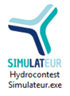
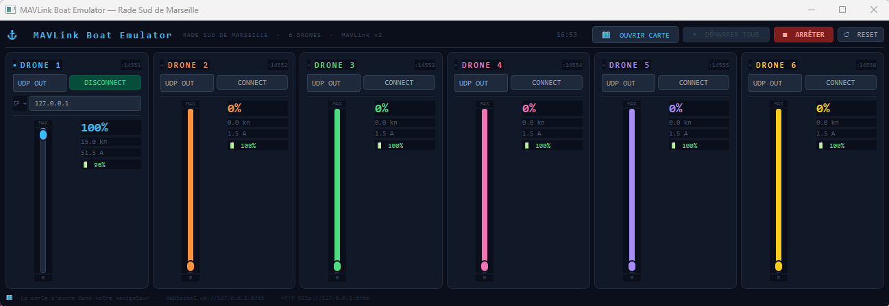
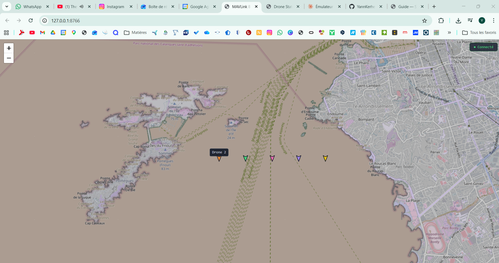
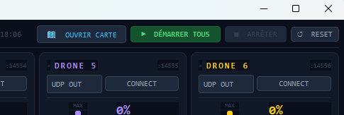
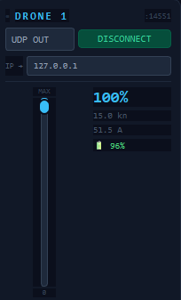
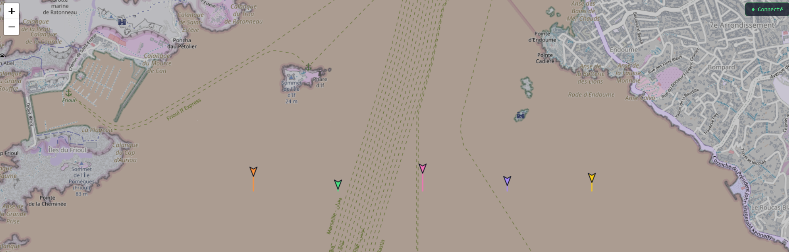
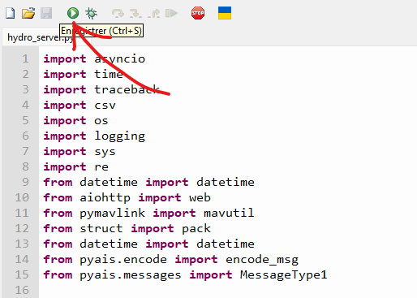
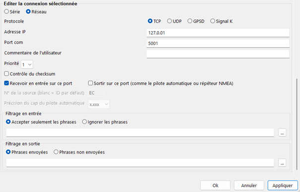
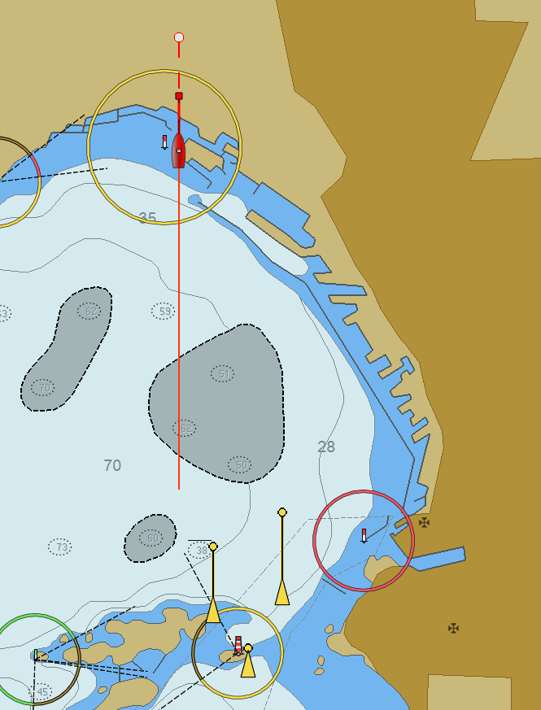

Téléchargez le fichier Simulateur_Hydrocontest.exe et double-cliquez dessus pour le lancer.

Au démarrage, deux fenêtres apparaissent automatiquement :
- La fenêtre logicielle — c'est la télécommande. Elle affiche les 6 drones avec leurs leviers de vitesse.
- Une page web dans votre navigateur — elle affiche la carte OpenStreetMap de la Rade Sud de Marseille avec les bateaux en temps réel.


Cliquez sur le bouton ▶ DÉMARRER TOUS — le grand bouton vert en haut à gauche de la fenêtre logicielle.

Les 6 bateaux sont alors prêts à naviguer. Ils démarreront dès que vous agirez sur leurs leviers de vitesse individuels.
Pour chaque drone, dans sa carte :
- Vérifiez que le protocole est bien réglé sur
UDP OUT(c'est la valeur par défaut). - Si le simulateur et le serveur
hydro_server.pytournent sur la même machine, l'IP affichée127.0.0.1convient. Sinon, saisissez l'IP réseau du serveur. - Cliquez sur CONNECT. Le bouton passe en vert.

Référence des ports utilisés :
| Drone | Port UDP | Statut |
|---|---|---|
| Drone 1 | 14551 | Bleu |
| Drone 2 | 14552 | Orange |
| Drone 3 | 14553 | Vert |
| Drone 4 | 14554 | Rose |
| Drone 5 | 14555 | Violet |
| Drone 6 | 14556 | Jaune |
Agissez ensuite sur les leviers de vitesse de chaque drone pour les faire avancer. Les traces apparaissent en temps réel sur la carte.

Ouvrez le dossier hydro_contest et lancez hydro_server.py avec Thonny :
- Ouvrir Thonny Python
- Ouvrir le fichier
hydro_server.pyvia Fichier → Ouvrir - Cliquer sur Exécuter le script courant (flèche blanche sur rond vert, ou F5)

Les logs suivants doivent apparaître dans la console :
INFO - Creating drones
INFO - MAVLink Comms: 1 : 14551
INFO - MAVLink Comms: 2 : 14552
INFO - MAVLink Comms: 3 : 14553
INFO - MAVLink Comms: 4 : 14554
INFO - Starting NMEA2000 TCP server for Drone 1 on port 5001
...
INFO - Web GUI is running on http://0.0.0.0:8080
Rendez-vous ensuite dans votre navigateur à l'adresse :
Pour tester le flux NMEA vers les postes TimeZero des équipes, utilisez le logiciel gratuit OpenCPN.
- Ouvrir OpenCPN
- Aller dans Options → Connexions → Ajouter une connexion
- Choisir le protocole TCP
- Saisir l'adresse IP :
127.0.0.1 - Saisir le port :
5001(pour le Drone 1,5002pour le Drone 2, etc.) - Cocher Recevoir en entrée sur ce port
- Valider avec OK

Le bateau simulé apparaît sur la carte OpenCPN, ainsi que les cibles AIS des autres drones.
